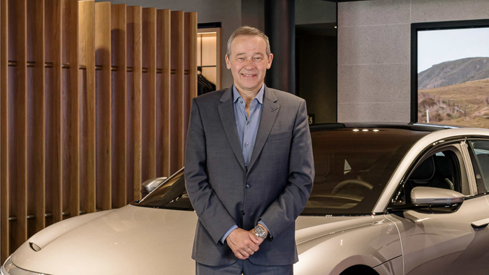

<section class="section blog_detail_wrapper">
  <div class="container">
    <div class="blog_detail_banner">
      <a href="#">All Stories</a>
    </div>

    <div class="blog_detail_id">
      <span>26 Jul, 2021</span>
      <span><a href="#">Company</a></span>
    </div>

    <h2 class="blog_detail_title">A note from our CEO on Lucid going public.</h2>

    <p class="blog_detail_subtitle">Peter Rawlinson speaks to our public offering and the road ahead.</p>

    <div class="blog_detail_featured_image">
      
    </div>

    <div class="blog_detail_content">
      <p>Today marks a defining milestone for Lucid, as we <a href="#">join Nasdaq and become a public company</a>. Even as we enjoy this day, our focus – as always – is on moving forward.</p>

      <p>We are on track to meet our projected customer deliveries this year, the next, and into the future. But with the $4.4 billion in funding we now have in the bank, we’re able to significantly accelerate our trajectory while also mitigating our risks in delivering the world’s best EVs.</p>

      <p>Lucid will add 2.7 million square feet of additional space at our greenfield factory in Arizona. This will allow us to add a separate line for our Project Gravity electric SUV even as we accelerate its development. Tomorrow, I will head back out west to work with the incredible team we’ve assembled to build Lucid’s future.</p>

      <p>Lucid will add 2.7 million square feet of additional space at our greenfield factory in Arizona. This will allow us to add a separate line for our Project Gravity electric SUV even as we accelerate its development. Tomorrow, I will head back out west to work with the incredible team we’ve assembled to build Lucid’s future.</p>

      <p>We believe we’re creating the best EVs ever made. But our aspirations go beyond selling cars. Our planet is facing an environmental crisis that impacts every living being – now and in the future.</p>

      <p>That’s why we’ve been working so hard over these many years, and why we’ll keep working tomorrow and beyond. Humankind doesn’t yet have an answer for the problems we face, but we have to start somewhere. At Lucid, we’ve started with a factory, with a new generation of cars and plans for many more, and most critically, with a path forward on a larger energy and sustainability strategy.</p>

      <p>So along with thanking every Lucid employee – from our headquarters in California, to our factory in Arizona, to our colleagues across the globe – I’d like to thank you. For recognizing and helping to further our vision of creating the most captivating electric vehicles and a more sustainable future for us all.</p>
    </div>

    <div class="blog_detail_share">
      <h2>Share</h2>
      <ul>
        <li>
          <a href="#">Facebook</a>
        </li>
      </ul>
    </div>
  </div>
</section>